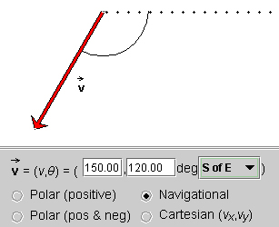

3. Navigational. The applet is now set to this mode. In this mode, a vector is specified by its magnitude and an angle where the angle is specified relative to a compass direction.
Choose different ones from the eight compass directions on the drop-down menu in the applet's control panel. Observe how the angle and reference line change while the vector stays the same.
Choose "NofE" (North of East). This will produce the same reference line and angle as in the Polar (positive) mode. If you switch back to Page 1, you can compare the applet's display there.
"North of East" means that the angle is measured starting from the east direction and going towards the north direction, but not necessarily stopping there. E.g., if you choose q = 240o, the angle goes all the way past the west direction so that the vector points in a general southwest direction.
If you set the magnitude to 150, you should get exactly the same vector as shown in the Figure at the bottom of Page 1.
Question. What do you expect the angle will be for the same vector if you choose "SofE" (South of East)? Make a prediction and then check it with the applet. You should get the same display as in the Figure below.

Note that the angle is +120o, not -120o. In the Navigational mode, angles are by definition positive and range from 0 to 360o.